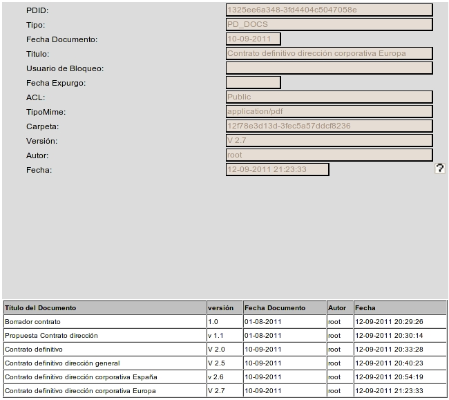

By selecting the menu option Document - Version List, a list of versions of the currently selected document will be shown.
Clicking on any of the versions of the document from the list, you can see at the top of values assigned to the document metadata in that version. Clicking on the title, you can see the file associated with that particular version.
The results table shows the data:

In the Swing client version, this results table can be sorted by selecting the header of each column. You can also change the size of each column by dragging the separator line in the headers
View: CheckIn (Confirms changes in the locked document), CheckOut (Locks a Document for editing) and Cancel Checkout (Cancels changes in the document)